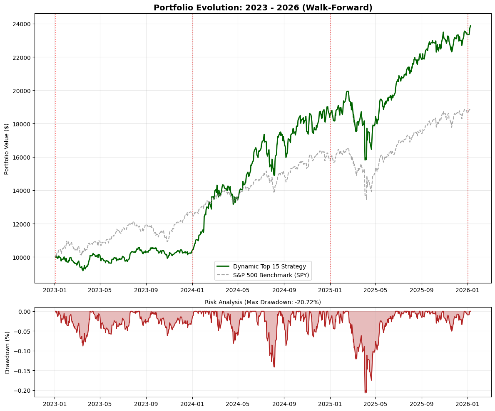

Code
# !pip install pandas numpy yfinance matplotlib scipyLerneir Ruiz
January 12, 2026
# S&P500 Portfolio Optimization
Background: Investors often seek to optimize their portfolios to maximize returns while minimizing risk. The S&P500 index, comprising 500 of the largest publicly traded companies in the U.S., provides a diverse set of investment opportunities. This project aims to analyze historical stock data from the S&P500 to construct an optimized investment strategy. Problem Statement: How can we optimally allocate investments across the 15 largest companies within the S&P500 stocks to achieve an optimal balance between risk and return?
The main goal of this analysis is to define the optimal asset allocation within an S&P500 portfolio to achieve the best risk-adjusted returns.
Specific Objectives: * Data Retrieval: Fetch historical price data for selected stocks and the S&P 500 index (SPY) using financial APIs. * Performance Analysis: Calculate key metrics such as Annualized Return, Volatility (Standard Deviation), and Beta. * Portfolio Optimization: Use Modern Portfolio Theory (Markowitz) to find the “Efficient Frontier” and determine optimal asset allocation. * Benchmark Comparison: Visualize the performance of the optimized portfolio versus the S&P 500 benchmark over the last 5 years.
To achieve these objectives, the following workflow will be followed: 1. Data Acquisition: Using yfinance to download Adjusted Close prices. 2. Exploratory Data Analysis (EDA): Visualizing cumulative returns and correlation matrices to understand asset relationships. 3. Quantitative Analysis: Computing daily log returns, covariance matrices, and portfolio variance. 4. Simulation & Optimization: Running a Monte Carlo simulation (or using scipy.optimize) to identify the portfolio weights that maximize the Sharpe Ratio.
This project utilizes Python for financial analysis, specifically: * yfinance: For downloading market data. * pandas & numpy: For data manipulation and vector calculations. * matplotlib & seaborn: For financial plotting and correlation heatmaps. * scipy: For portfolio optimization routines.
The tickers for top 15 companies was obtained for each year by using the Wayback Machine (https://web.archive.org/) to watch previous version of https://www.slickcharts.com/sp500
rebalance_map = {
# 2023:
"2023-01-03": [
"AAPL", "MSFT", "AMZN", "BRK-B", "GOOGL",
"UNH", "GOOG", "JNJ", "XOM", "JPM",
"NVDA", "PG", "V", "HD", "TSLA"
],
# 2024:
"2024-01-03": [
"AAPL", "MSFT", "AMZN", "NVDA", "GOOGL",
"META", "GOOG", "TSLA", "BRK-B", "AVGO",
"JPM", "UNH", "LLY", "V", "XOM"
],
# 2025:
"2025-01-03": [
"AAPL", "NVDA", "MSFT", "AMZN", "META",
"TSLA", "AVGO", "GOOGL", "GOOG", "BRK-B",
"JPM", "LLY", "V", "UNH", "XOM"
],
# 2026:
"2026-01-02": [
"NVDA", "AAPL", "MSFT", "AMZN", "GOOGL",
"GOOG", "AVGO", "META", "TSLA", "BRK-B",
"LLY", "WMT", "JPM", "V", "ORCL"
]
}def get_risk_free_rate(target_date_str):
"""
Fetches the 10-Year US Treasury Yield (^TNX) closest to the given date.
Returns the value as a decimal (e.g., 0.04 for 4%).
"""
ticker = "^TNX"
end_date = pd.to_datetime(target_date_str)
start_date = end_date - timedelta(days=15) # Look back 2 weeks to find a trading day
try:
# Added auto_adjust=True to fix warning
rf_data = yf.download(ticker, start=start_date, end=end_date, progress=False, auto_adjust=True)['Close']
if rf_data.empty:
print(f" [!] Warning: Could not fetch ^TNX. Defaulting to 4%.")
return risk_free_rate_default
# Yahoo returns index values (e.g., 3.85), so we divide by 100
latest_rate = rf_data.iloc[-1] / 100
return float(latest_rate)
except Exception as e:
print(f" [!] Error fetching Risk-Free Rate: {e}. Defaulting to 4%.")
return risk_free_rate_defaultdef get_optimal_weights(tickers, rebalance_date):
end_train = pd.to_datetime(rebalance_date)
start_train = end_train - timedelta(days=lookback_days)
print(f" > Training model ({start_train.date()} -> {end_train.date()})...")
# Get Dynamic Risk Free Rate
current_rf_rate = get_risk_free_rate(rebalance_date)
print(f" > Risk-Free Rate for this period: {current_rf_rate:.2%}")
# Download training data
try:
# Added auto_adjust=True to fix warning and ensure adjusted prices
data = yf.download(tickers, start=start_train, end=end_train, progress=False, auto_adjust=True)['Close']
except Exception as e:
print(f" Error downloading data: {e}")
return pd.Series([1/len(tickers)]*len(tickers), index=tickers)
# Data Cleaning
data = data.ffill().dropna(axis=1, how='any') # Drop stocks with any missing data
valid_tickers = data.columns.tolist()
if len(valid_tickers) == 0: return pd.Series()
returns = data.pct_change().dropna()
mean_returns = returns.mean() * 252
cov_matrix = returns.cov() * 252
num_assets = len(valid_tickers)
# Objective Function: Minimize Negative Sharpe Ratio
def negative_sharpe(weights):
p_ret = np.dot(weights, mean_returns)
p_vol = np.sqrt(np.dot(weights.T, np.dot(cov_matrix, weights)))
return -(p_ret - current_rf_rate) / p_vol
# Constraints and Bounds (Max 30% allocation per stock)
constraints = ({'type': 'eq', 'fun': lambda x: np.sum(x) - 1})
bounds = tuple((min_weight, max_weight) for _ in range(num_assets))
try:
result = minimize(negative_sharpe, num_assets * [1./num_assets],
method='SLSQP', bounds=bounds, constraints=constraints)
return pd.Series(result.x, index=valid_tickers)
except:
print(" Optimization failed, defaulting to Equal Weights.")
return pd.Series([1./num_assets]*num_assets, index=valid_tickers)portfolio_value = [initial_capital]
sorted_dates = sorted(list(rebalance_map.keys()))
portfolio_dates = [pd.to_datetime(sorted_dates[0])]
print(f"=== STARTING WALK-FORWARD BACKTEST (2023-2026) ===")
for i in range(len(sorted_dates)):
curr_date = sorted_dates[i]
tickers = rebalance_map[curr_date]
if i < len(sorted_dates) - 1:
next_date = sorted_dates[i+1]
else:
next_date = datetime.now().strftime('%Y-%m-%d')
if pd.to_datetime(curr_date) > datetime.now():
break
print(f"\n--- REBALANCE DATE: {curr_date} ---")
# A. Optimal Weights
weights = get_optimal_weights(tickers, curr_date)
print(" Top 3 Allocations:")
print(weights.sort_values(ascending=False).head(3).to_string())
# B. Simulation
print(f" > Simulating returns until {next_date}...")
# Added auto_adjust=True here as well
price_data = yf.download(weights.index.tolist(), start=curr_date, end=next_date, progress=False, auto_adjust=True)['Close']
if not price_data.empty:
period_rets = price_data.pct_change().dropna()
available_tickers = period_rets.columns.intersection(weights.index)
w_active = weights[available_tickers]
w_active = w_active / w_active.sum()
daily_portfolio_ret = period_rets[available_tickers].dot(w_active)
current_balance = portfolio_value[-1]
cum_period = (1 + daily_portfolio_ret).cumprod() * current_balance
portfolio_value.extend(cum_period.values)
portfolio_dates.extend(cum_period.index)
else:
print(" Not enough data for this period.")=== STARTING WALK-FORWARD BACKTEST (2023-2026) ===
--- REBALANCE DATE: 2023-01-03 ---
> Training model (2022-01-03 -> 2023-01-03)...
> Risk-Free Rate for this period: 3.88%/tmp/ipython-input-3046436326.py:20: FutureWarning: Calling float on a single element Series is deprecated and will raise a TypeError in the future. Use float(ser.iloc[0]) instead
return float(latest_rate) Top 3 Allocations:
BRK-B 0.25
UNH 0.25
XOM 0.25
> Simulating returns until 2024-01-03...
--- REBALANCE DATE: 2024-01-03 ---
> Training model (2023-01-03 -> 2024-01-03).../tmp/ipython-input-3046436326.py:20: FutureWarning: Calling float on a single element Series is deprecated and will raise a TypeError in the future. Use float(ser.iloc[0]) instead
return float(latest_rate) > Risk-Free Rate for this period: 3.95%
Top 3 Allocations:
LLY 0.250000
META 0.250000
NVDA 0.188744
> Simulating returns until 2025-01-03...
--- REBALANCE DATE: 2025-01-03 ---
> Training model (2024-01-04 -> 2025-01-03).../tmp/ipython-input-3046436326.py:20: FutureWarning: Calling float on a single element Series is deprecated and will raise a TypeError in the future. Use float(ser.iloc[0]) instead
return float(latest_rate) > Risk-Free Rate for this period: 4.57%
Top 3 Allocations:
JPM 0.240112
BRK-B 0.231282
NVDA 0.196696
> Simulating returns until 2026-01-02...
--- REBALANCE DATE: 2026-01-02 ---
> Training model (2025-01-02 -> 2026-01-02)...
> Risk-Free Rate for this period: 4.16%/tmp/ipython-input-3046436326.py:20: FutureWarning: Calling float on a single element Series is deprecated and will raise a TypeError in the future. Use float(ser.iloc[0]) instead
return float(latest_rate) Top 3 Allocations:
GOOGL 0.250000
GOOG 0.224365
LLY 0.173767
> Simulating returns until 2026-01-12...equity_curve = pd.Series(portfolio_value, index=portfolio_dates)
equity_curve = equity_curve[~equity_curve.index.duplicated(keep='first')]
# Getting benchmark data
spy = yf.download('SPY', start=portfolio_dates[0], end=portfolio_dates[-1], progress=False, auto_adjust=True)['Close']
spy_norm = spy / spy.iloc[0] * initial_capital
# Drawdown Calculation
rolling_max = equity_curve.cummax()
drawdown = (equity_curve - rolling_max) / rolling_max
max_dd = drawdown.min()
# Visualization
fig, (ax1, ax2) = plt.subplots(2, 1, figsize=(12, 10), gridspec_kw={'height_ratios': [3, 1]})
ax1.plot(equity_curve, label='Dynamic Top 15 Strategy', color='#006400', linewidth=2)
ax1.plot(spy_norm, label='S&P 500 Benchmark (SPY)', color='gray', linestyle='--', alpha=0.7)
ax1.set_title('Portfolio Evolution: 2023 - 2026 (Walk-Forward)', fontsize=14, fontweight='bold')
ax1.set_ylabel('Portfolio Value ($)')
ax1.legend()
ax1.grid(True, alpha=0.3)
for d in sorted_dates:
if pd.to_datetime(d) <= pd.to_datetime(portfolio_dates[-1]):
ax1.axvline(pd.to_datetime(d), color='red', linestyle=':', alpha=0.5)
ax2.plot(drawdown.index, drawdown, color='firebrick', label='Drawdown')
ax2.fill_between(drawdown.index, drawdown, 0, color='firebrick', alpha=0.3)
ax2.set_ylabel('Drawdown (%)')
ax2.set_title(f'Risk Analysis (Max Drawdown: {max_dd:.2%})', fontsize=10)
ax2.grid(True, alpha=0.2)
plt.tight_layout()
plt.show()
# Calculate Total Returns
# We use .item() to ensure we extract a single scalar number, avoiding the TypeError
total_ret = (equity_curve.iloc[-1] / initial_capital) - 1
# Fix for SPY: If it's a DataFrame, .iloc[-1] returns a Series. .item() converts it to a float.
if isinstance(spy_norm, pd.DataFrame):
spy_final_value = spy_norm.iloc[-1].item()
else:
spy_final_value = spy_norm.iloc[-1]
total_ret_spy = (spy_final_value / initial_capital) - 1
# Sharpe Ratio Calculation
avg_rf = 0.04
daily_rets_strat = equity_curve.pct_change().dropna()
sharpe_strat = (daily_rets_strat.mean() * 252 - avg_rf) / (daily_rets_strat.std() * np.sqrt(252))
daily_rets_spy = spy_norm.pct_change().dropna()
# Ensure daily_rets_spy is a Series for calculation
if isinstance(daily_rets_spy, pd.DataFrame):
daily_rets_spy = daily_rets_spy.iloc[:, 0]
sharpe_spy = (daily_rets_spy.mean() * 252 - avg_rf) / (daily_rets_spy.std() * np.sqrt(252))
print("\n=== FINAL PERFORMANCE REPORT (2023-2026) ===")
print(f"Total Return (Strategy): {total_ret:.2%}")
print(f"Total Return (S&P 500): {total_ret_spy:.2%}")
print(f"Final Capital: ${equity_curve.iloc[-1]:,.2f}")
print("-" * 40)
print(f"Max Drawdown: {max_dd:.2%}")
print(f"Sharpe Ratio (Strategy): {sharpe_strat:.2f}")
print(f"Sharpe Ratio (S&P 500): {sharpe_spy:.2f}")
if sharpe_strat > sharpe_spy:
print("\n[SUCCESS] The strategy generated higher risk-adjusted returns (Alpha).")
else:
print("\n[NOTE] Strategy had lower risk-adjusted returns than the market.")
=== FINAL PERFORMANCE REPORT (2023-2026) ===
Total Return (Strategy): 138.78%
Total Return (S&P 500): 88.36%
Final Capital: $23,877.74
----------------------------------------
Max Drawdown: -20.72%
Sharpe Ratio (Strategy): 1.31
Sharpe Ratio (S&P 500): 1.19
[SUCCESS] The strategy generated higher risk-adjusted returns (Alpha).